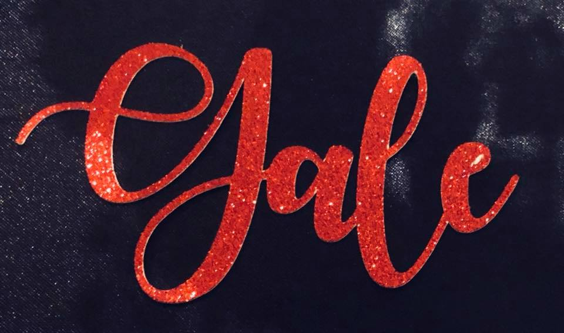

Following completion of my Masters of Arts in Public Relations and Organizational Communication at Wayne State University and approximately a decade of communication expereince, I became a storyteller for entities ranging from large global companies to small start up businesses. Of the accompanying tasks, managing digital presence such as website maintenance and social media strategy were, by far, my favorite. This, along with the necessity to hire tech firms to accomplish certain tasks, led me to my growing passion for computer programming and software engineering.
For years, as a communicator working mainly in the automotive industry, I worked alongside engineers and felt like there was a part of me that held a passion for STEM and problem solving. Upon conducting freelance website maintenance and redesign work for a small business, I found myself mining someone else's HTML code on a Squarespace site to find out why my client's map functions were not properly functioning. When I finally found the error, a missing carrot, I felt empowered and knew that coding was my next educational and professional endeavor. In 2016, I found my way to Grand Circus Detroit for a Front-End development workshop where I learned HTML and CSS. I loved it and was instantly able to use those skills in my role as the sole architect for the internal and external communication infrastructure at Hyundai America Technical Center, Inc. where I was maintaining our recently redesigned website.
A year or so later, I found myself working at a global public relations firm in downtown Detroit handling the firm's automotive accounts. We regularly handled their social media strategy and content as well as some campaign support. The client wanted mobile applications to support the cmapaign and my firm partnered with a few freelance developers and tech firms to accomplish tasks like that. Knowing that I had been bitten by the developer bug, I saw an opportunity to make myself more marketable and began searching for a means to broaden my skillset by learning back-end coding. Just when I was about to give up on my search, my mother, who is proficient in Java, told me about a free Java coding program for Detroit residents. When I researched the information further, I found that Grand Circus was hosting the program. With less than a week left to apply, I filled out the application, hoping for the best. Today, I am halfway through my Java coding bootcamp eager to embark on a career in a completely new industry.